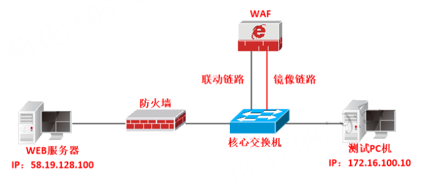
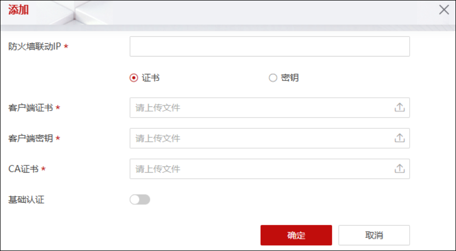
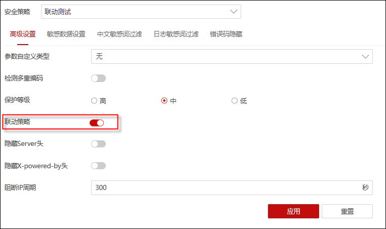
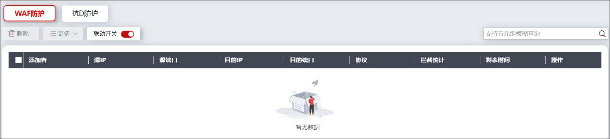

l应用场景
将WAF旁路部署在核心交换机上面，实现WAF设备检测到攻击时，联动防火墙设备阻断攻击行为。

l实现方法
1）WAF配置监听接口，接收核心交换机镜像接口的流量；2）WAF配置与防火墙联动策略，WAF设备检测到攻击后进行联动防火墙阻断。
l配置步骤
ü配置WAF
| 步骤1 | 配置基础网络。配置接收核心交换机镜像流量的接口的工作模式为“监听”，配置与NGFW联动的接口的工作模式为路由模式，并配置该联动接口的IP地址以及与NGFW设备通信的路由。 |
| 步骤2 | 配置WAF与防火墙联动策略（以WAF3.0为例，功能菜单路径：网络层防护>防火墙联动）。 |

|
²“基础认证”参数的配置需要与NGFW中联动基础认证参数的配置保持一致。 |

| 步骤3 | 配置WAF引擎的“全局部署模式”为流模式或者混合模式（以WAF3.0为例，功能菜单路径为：系统管理>系统设置>引擎参数）。 |
| 步骤4 | 配置服务器防护策略。 |
| 步骤5 | 配置服务器防护策略对应的安全策略，开启安全策略的联动策略（以WAF3.0为例，开启联动策略的功能菜单路径为：WEB防护>安全策略>高级设置>高级设置）。 |

ü配置NGFW
| 步骤1 | 配置基础网络（接口地址和路由），确保NGFW与WAF设备网络连通。 |
| 步骤2 | 开放NGFW与WAF设备的联动服务，详见 联动服务配置。 |
| 步骤3 | 开启NGFW的联动服务使能开关，配置证书与基础认证，详见 联动服务配置。 |
| 步骤4 | 开启WAF防护的联动开关，详见 WAF联动。 |
